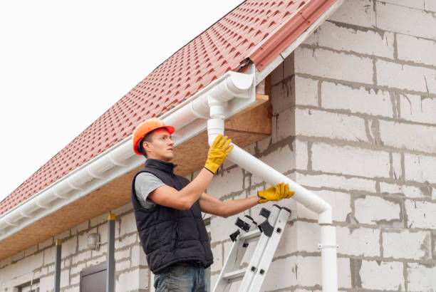

Charlevoix Michigan
info@squeakyguttercleaners.xyz
Charlevoix Michigan
info@squeakyguttercleaners.xyz

Trust our Charlevoix Michigan gutter cleaning experts to clear leaves, debris, and buildup. Enhance home safety and curb appeal with efficient, high-quality maintenance.
Click Here To Call Us (206) 813-0221Maintaining clean, debris-free gutters is essential for protecting your home from costly water damage. In Charlevoix Michigan our professional gutter cleaning services are designed to ensure your gutters function optimally year-round. Gutters clogged with leaves, dirt, and other debris can lead to serious issues such as roof leaks, foundation erosion, and mold growth. By choosing our expert team, you can prevent these problems and extend the lifespan of your gutters and home.
We specialize in comprehensive gutter cleaning that includes clearing blockages, flushing downspouts, and inspecting your gutters for potential damage. Our experienced technicians in Charlevoix Michigan use advanced tools and techniques to remove debris safely and efficiently, ensuring that your gutters remain clear and free-flowing. Whether you need seasonal cleaning or more frequent maintenance, we offer tailored solutions to meet your specific needs.
In addition to cleaning, we also provide gutter repair services to fix leaks, sagging sections, and other common issues that can compromise your gutter system’s performance. Protect your investment and enhance your home’s curb appeal with our reliable gutter cleaning services in Charlevoix Michigan . Contact us today to schedule your service and keep your gutters in top condition throughout the year.
Residential & commercial Gutter cleaning
Quality services at affordable prices
Immediate 24/ 7 emergency services


Keeping your gutters clear is essential for maintaining the health of your home and preventing costly water damage. At Squeaky Gutter Cleaners, serving Charlevoix Michigan we offer expert advice on how to prevent your gutters from becoming clogged. Here are some effective strategies to keep your gutters flowing freely.
1. Regular Cleaning
One of the most effective ways to prevent clogs is through regular cleaning. Schedule gutter cleaning at least twice a year, ideally in the spring and fall, to remove leaves, twigs, and debris. This helps to ensure that your gutters are clear and functioning properly before heavy rains or winter weather.
2. Install Gutter Guards
Gutter guards or screens can be a game-changer in preventing clogs. These devices cover your gutters and allow water to pass through while keeping larger debris out. They significantly reduce the frequency of cleaning and help maintain optimal gutter performance.
3. Trim Overhanging Branches
Trees with overhanging branches are a common source of debris in gutters. By trimming back these branches, you minimize the amount of leaves and twigs that can fall into your gutters. This simple step helps reduce the risk of clogs and keeps your gutters clear.
4. Check for Proper Downspout Function
Ensure that your downspouts are directing water away from your home’s foundation. Properly functioning downspouts help prevent water from pooling in the gutters and reduce the chance of clogs. Regularly inspect and clean your downspouts to ensure they are clear and effective.
5. Ensure Proper Gutter Slope
Gutters should be properly sloped to allow water to flow toward the downspouts. If your gutters are not sloped correctly, water can pool and cause debris to accumulate. Adjusting the slope can help ensure that water moves efficiently through your gutter system.
For expert gutter maintenance and prevention tips in Charlevoix Michigan trust Squeaky Gutter Cleaners. Our professional team is dedicated to keeping your gutters in top condition and preventing clogs before they become a problem. Contact us today to schedule your gutter cleaning and maintenance service.
Residential & commercial Gutter cleaning
Quality services at affordable prices
Immediate 24/ 7 emergency services
The best way to maintain your home’s gutter system is with annual cleanings. Our annual gutter cleaning services provide a reliable solution to keep your gutters functioning properly all year round. By scheduling this service, you ensure that your gutters are cleared regularly, minimizing the risks of water damage to your property. We tailor our approach to the unique requirements of your home's gutter system, so you can enjoy the peace of mind that comes from knowing you are preventing future issues.

As homeowners, it’s essential to protect your investment with reliable gutter cleaning services. Our gutter cleaning for homes in Charlevoix Michigan is tailored specifically to meet the unique needs of residential properties. From small townhomes to large family estates, we ensure that every gutter system is meticulously cleaned and inspected. Our professional team ensures that all debris is removed quickly and efficiently, allowing your gutters to function as intended, and protecting your home from leaks and mold. With our services, you ensure that your home remains safe from potential water damage.

Businesses rely on pristine conditions to attract customers, and our gutter cleaning for businesses in Charlevoix Michigan ensures your property remains inviting and functional. We understand the nuances of maintaining commercial properties.
What sets our commercial gutter service apart?
- Professionalism and reliability you can count on.
- Customizable schedules that work around your business hours.
- Extensive knowledge of the specific requirements of commercial gutters.

For a complete exterior maintenance solution, our gutter and fascia cleaning services effectively address both elements of your home's water management system. Dirty gutters and fascia can detract from your property’s value and curb appeal. Our skilled team cleans and inspects both your gutters and fascia boards, ensuring they are not only functioning correctly but also looking great. Choose us for a comprehensive cleaning solution that enhances your property’s appearance and protects against water damage.

When it comes to gutter cleaning, hiring specialists can make all the difference. Our gutter cleaning specialists in Charlevoix Michigan bring years of experience and a deep understanding of gutter systems, ensuring a thorough clean each time.
What makes our specialists the best choice?
- Highly trained and knowledgeable staff.
- Use of advanced tools and techniques for optimal results.
- Dedication to quality that stands out among competitors.
Rain gutters are the frontline defense against water damage, and keeping them clean is essential. Our rain gutter cleaning services in Charlevoix Michigan prioritize efficiency and thoroughness. We provide comprehensive cleanings that ensure free flow and functionality, offering customized solutions to suit your property’s needs. By maintaining your rain gutters regularly, you enhance the overall performance and extend the life of your gutter system.

Bringing back the shine to your gutters is made easy with our gutter washing services . Beyond simple debris removal, our washing service involves a detailed cleaning process designed to eliminate dirt, grime, and stains from the exterior of your gutters. Clean gutters not only improve the aesthetic of your property but also help prevent corrosion and build-up, extending their life span. Our team uses effective washing agents and techniques, guaranteeing that your gutters look like new while providing the functionality you expect.

Looking for gutter cleaning deals in Charlevoix Michigan ? We offer competitive packages and special promotions designed to make gutter maintenance affordable for everyone. Our aim is to provide exceptional service at a price that fits your budget. Whether you're looking for one-time cleaning or routine gutter maintenance, we frequently update our deals to bring you the best value. Don't miss the chance to protect your property while saving money! Contact us today to learn about our current gutter cleaning deals and how we can assist you.
Years Experience
Expert Technicians
Satisfied Clients
Compleate Projects
At Squeaky Gutter Cleaners, we understand the unique needs of homeowners and businesses in Charlevoix Michigan . Our commitment to exceptional service and thorough gutter cleaning ensures that your property remains protected from the elements year-round. Here's why we're the top choice for gutter cleaning in your city.
Expertise You Can Trust
With years of experience in the industry, our skilled team is adept at handling all types of gutter systems. Whether your home or business requires a standard clean or a more detailed inspection, we bring a wealth of knowledge and expertise to every job.
Top-Quality Service
We use state-of-the-art equipment and eco-friendly cleaning solutions to ensure your gutters are not only clean but also safe for the environment. Our thorough process removes debris, prevents clogs, and enhances the lifespan of your gutter system, ensuring optimal performance.
Local Reliability
As a locally owned and operated company, we pride ourselves on understanding the specific needs and challenges of properties in Charlevoix Michigan . Our prompt, reliable service is tailored to the unique climate and conditions of your area.
Customer Satisfaction Guaranteed
Your satisfaction is our top priority. From our transparent pricing to our friendly customer service, we’re dedicated to providing a seamless experience. We strive to exceed expectations with every service, ensuring that you’re completely satisfied with the results.
Choose Squeaky Gutter Cleaners for unparalleled expertise, quality, and local reliability. Contact us today to schedule your gutter cleaning and see why we're the preferred choice in Charlevoix Michigan .
If you've been searching for gutter cleaning services near me, look no further. Our expert team is ready to provide you with professional and efficient gutter cleaning that meets your unique needs. With years of experience serving Charlevoix Michigan we understand the importance of keeping your gutters free from debris and blockage. Clogged gutters can lead to serious water damage to your home’s foundation and roof, which is why timely and regular cleaning is critical. We utilize the latest tools and techniques to ensure that your gutter system operates smoothly. Choosing us means you can expect:
- Highly trained professionals.
- Comprehensive cleaning services tailored to your premises.
- Eco-friendly practices that guarantee your property remains safe.
Professional gutter cleaning is not just about removing leaves—it's about ensuring that your entire gutter system is functioning correctly. Our skilled technicians in Charlevoix Michigan come equipped with the right tools and knowledge to assess your gutters’ condition and provide a thorough cleaning. From inspecting downspouts to flushing out debris, we don't leave any stone unturned.
Why choose our professional gutter cleaning services?
- We promise satisfaction guaranteed.
- Our team is licensed and insured, providing you peace of mind.
- Our services are designed for both residential and commercial properties.
Quality gutter cleaning shouldn't break the bank. We pride ourselves on offering affordable gutter cleaning services that cater to different budgets without compromising on quality. We believe that keeping your home or business safe shouldn’t be a luxury.
Here’s why our affordable gutter cleaning is your best choice:
- Transparent pricing with no hidden fees.
- Special discounts for annual contracts.
- Flexible scheduling to fit your busy lifestyle.
Your home deserves the best, especially when it comes to residential gutter cleaning. Our gutter cleaning services focus on ensuring that your home remains safe and protected from water damage. Regular gutter maintenance is crucial for homeowners, and we provide an extensive range of services to meet your specific needs. We thoroughly inspect and clean your gutters, removing leaves, dirt, and other debris that can obstruct the flow of rainwater. Our experienced team goes above and beyond to ensure that each gutter system is meticulously cleaned and inspected for any signs of damage. With our reliable service, you can prevent minor issues from transforming into major repairs, giving you peace of mind and maintaining the value of your home.
Your business deserves optimal upkeep, and that includes regular gutter cleaning services to avoid expensive water damage. Our commercial gutter cleaning in Charlevoix Michigan is designed to address the specific needs of businesses—whether you're operating out of a small storefront or a large corporate building.
Why are we the best choice for commercial gutter cleaning?
- Flexible scheduling that minimizes disruption to your daily operations.
- Customized maintenance plans to fit your specific needs.
- Experienced technicians trained to handle large-scale projects efficiently.
Gutter maintenance is key to preventing costly repairs caused by water damage. Our comprehensive gutter maintenance services include regular inspections, cleanings, and necessary repairs to ensure that your gutters are functioning optimally year-round. We believe that proactive maintenance is better than reactive repair, and our team is trained to identify potential issues before they escalate. With us, you’ll receive consistent service that extends the life of your gutter system while keeping your home safe and secure from storm damage.
Supporting local businesses is essential, and when it comes to choosing local gutter cleaning companies in Charlevoix Michigan we are proud to be your number one choice. We understand the unique needs and environmental factors affecting our local area, which helps us provide customized gutter solutions that suit your home or business. Moreover, we are committed to building relationships in our community, ensuring that our services are trustworthy and reliable. Our local teams guarantee fast response times, friendly service, and a quality-focused approach, ensuring that your needs are met with sensitivity and expertise.
Debris accumulation in your gutters can lead to blockages and damage if not addressed promptly. Our gutter debris removal services focus on eliminating leaves, twigs, and buildup from your gutters. We utilize advanced techniques to ensure thorough cleaning, leaving your gutters free-flowing and effective. Our team is trained to tackle any amount of debris, no matter how challenging. Additionally, we provide tips on preventing future build-up, ensuring your gutters remain clean long after we're gone.
When it comes to finding the best gutter cleaning companies we understand the importance of choosing a trusted provider. Our reputation is built on years of delivering exceptional service and satisfaction to our clients.
Here's what sets us apart as the best:
- Extensive experience with a proven track record of quality.
- Highly trained staff who care about your property as much as you do.
- Positive customer reviews and testimonials that speak for themselves.
Roofs and gutters work together to protect your home; thus, both need proper maintenance. Our combined roof and gutter cleaning services ensure your entire drainage system is functioning efficiently.
Why opt for our integrated services?
- Cost-effective packages that save you money over separate services.
- Comprehensive inspections to catch potential problems early.
- Expertise in working with different roof types and gutter systems.
Gutter inspection services are vital to maintaining the longevity and functionality of your gutter systems. Regular inspections initiate timely maintenance and repairs, allowing you to catch minor issues before they escalate into costly problems. Our trained professionals perform rigorous assessments of your gutters, ensuring all components are intact and functioning. Should we identify any potential areas of concern, we provide detailed reports and recommendations for addressing those issues promptly. Relying on us for gutter inspections means investing in the protection of your property and peace of mind against future damage.
Sometimes, cleaning isn’t enough! Our gutter cleaning and repair services in Charlevoix Michigan focus on both clearing your gutters and fixing any damages they may have sustained over time. Our experienced team can identify issues such as rust, sagging, or misalignment during a routine cleaning visit. We'll not only clean out debris but also provide professional repairs to restore your gutters to optimal function. With our combined approach, you can ensure your gutter system is not only clean but also in great working condition.
Clogged gutters can lead to serious issues if not handled quickly and effectively. Our clogged gutter cleaning services in Charlevoix Michigan specialize in detecting and removing blockages that can adversely impact your home. Not only do we clear the clogs, but we also offer advice on preventing future problems. Our professional approach ensures your gutters drain properly, protecting your home from unnecessary moisture damage.
The changing seasons can leave your gutters filled with leaves, and without timely care, they may lead to problems like clogging and overflow. Our leaf gutter cleaning services specifically focus on addressing leaf accumulation, ensuring your gutter system can handle the downpours of rain. Our team utilizes specialized equipment to safely remove all organic debris, giving your gutters a thorough cleaning. Fall does not have to be a season of worry for homeowners as we ensure that your property is well-prepared to handle any seasonal change.
When the unexpected happens, our emergency gutter cleaning services are just a phone call away. Whether it’s storm damage, sudden clogs, or an overflowing gutter, we know that time is of the essence. Our team is ready to respond swiftly, equipped with everything needed to resolve your gutter issues efficiently. We understand that emergencies can lead to significant property damage, which is why we’re committed to providing rapid, effective solutions that quickly restore the integrity of your drainage system. Choose us for our prompt service and dedicated customer care; we are here when you need us most.
Protecting your gutters from future clogs can save you time and money. Our gutter guard installation services provide an effective barrier against leaves and debris, ensuring water flows through without interruption. We offer a variety of gutter guard options suited to different needs and preferences. With proper installation, you can enjoy peace of mind knowing your gutters are protected against future buildup, making maintenance a breeze.
Downspouts are crucial to your gutter system's functionality, and our downspout cleaning services ensure these channels are clear and functioning properly.
Why is downspout cleaning crucial?
- Prevention of water damage to your home’s foundation.
- In-depth cleaning techniques to address stubborn blockages.
- Regular maintenance packages available for ongoing care.
Keeping pests out of your gutters is crucial for maintaining a healthy and safe home environment. At Squeaky Gutter Cleaners, serving Charlevoix Michigan we offer effective strategies to help you prevent pest infestations and ensure your gutters remain clean and functional.
1. Install Gutter Guards
Gutter guards are an excellent first line of defense against pests. These protective screens cover your gutters, preventing leaves, twigs, and other debris from entering and creating a habitat for insects. By keeping these materials out, gutter guards significantly reduce the likelihood of pests such as mosquitoes, birds, and rodents nesting in your gutters.
2. Regular Gutter Cleaning
Routine gutter cleaning is essential to prevent pests from taking up residence. Clean your gutters at least twice a year—during the spring and fall—to remove any accumulated debris. This will eliminate potential nesting sites and food sources for pests, making your gutters less inviting.
3. Trim Overhanging Branches
Trees and shrubs near your home can offer easy access for pests looking to invade your gutters. Regularly trim back overhanging branches and foliage to reduce the chances of pests using them as pathways to your gutters. Keeping vegetation away also minimizes the amount of organic matter that can fall into your gutters.
4. Check for Gutter Leaks
Leaks in your gutters can create damp conditions that attract pests. Inspect your gutters regularly for any signs of leaks or water damage and address them promptly. Ensuring your gutters are sealed and functioning correctly will help prevent moisture buildup that can lure insects and other pests.
5. Seal Entry Points
Pests like rodents can enter your gutters through small gaps or cracks. Seal any openings in your gutters and downspouts to prevent pests from gaining access. Regularly check for and repair any damage to ensure your gutters remain secure.
For expert gutter cleaning and pest prevention services in Charlevoix Michigan trust Squeaky Gutter Cleaners. Our team is dedicated to keeping your gutters free from pests and debris. Contact us today to schedule a service or learn more about how we can help you maintain a pest-free home.
Charlevoix (/ˈʃɑːrləvɔɪ/ SHAR-lə-voy) is a city in the U.S. state of Michigan. It is the county seat of Charlevoix County. Part of Northern Michigan, Charlevoix is located on an isthmus between Lake Michigan and Lake Charlevoix, bisected by the short Pine River. Charlevoix serves as the main access point for Beaver Island, the largest island in Lake Michigan, which can be accessed by Island Airways or carferry. The population of Charlevoix was 2,348 at the 2020 census. Charlevoix is mostly surrounded by Charlevoix Township, but the two are administered autonomously.
Yes, we provide gutter cleaning services for rental properties and multi-unit residences .
Regular cleaning, installing gutter guards, and ensuring proper slope are ways to prevent clogging, all of which Squeaky Gutter Cleaners can help with .
Yes, Squeaky Gutter Cleaners can clean and maintain gutters with gutter guard systems in Charlevoix Michigan .
Yes, we offer gutter cleaning services year-round, including during the winter months .
Yes, Squeaky Gutter Cleaners is fully licensed and insured for all gutter cleaning services in Charlevoix Michigan .
Yes, Squeaky Gutter Cleaners offers seasonal maintenance plans to keep your gutters clean year-round .
Neglecting gutter cleaning can lead to water damage, foundation issues, and roof leaks, making regular maintenance essential in Charlevoix Michigan .
Yes, in addition to cleaning, we also offer minor gutter repair services in Charlevoix Michigan .
Yes, if water overflows from clogged gutters, it can pool around your foundation, leading to potential damage in Charlevoix Michigan .
We serve all neighborhoods providing gutter cleaning services throughout the area.
Yes, clogged gutters can lead to water backing up onto your roof, potentially causing leaks and water damage .
You can schedule a cleaning by calling us or filling out a service request form on our website for properties .
Yes, we offer gutter cleaning services for both residential and commercial properties .
Yes, we specialize in removing gutter blockages to ensure water flows smoothly through your system .
Contact Squeaky Gutter Cleaners immediately for emergency service if your gutters are overflowing during a storm .
The cost of gutter cleaning depends on the size of your property, but Squeaky Gutter Cleaners offers free estimates .
We accept a variety of payment methods, including credit cards and online payments, for your convenience .
Yes, our team is trained to safely clean gutters on both single and multi-story buildings .
Gutter cleaning usually takes a few hours, depending on the size of your property .
It's recommended to clean your gutters at least twice a year especially in the spring and fall when debris buildup is more common.
Squeaky Gutter Cleaners provides professional gutter cleaning, debris removal, and downspout clearing services for homes and businesses in Charlevoix Michigan .
Yes, we use environmentally friendly cleaning methods to safely clean your gutters .
Yes, we provide professional gutter guard installation to help reduce the need for frequent cleaning .
While it's possible to clean your gutters yourself, hiring a professional like Squeaky Gutter Cleaners ensures safe and thorough cleaning in Charlevoix Michigan .
Yes, cleaning your gutters can reduce the risk of pests, such as mosquitoes and rodents, nesting in debris-filled gutters in Charlevoix Michigan .
Yes, we provide free estimates for all gutter cleaning and repair services in Charlevoix Michigan .
If you notice overflowing water, sagging gutters, or plant growth, it's time to schedule a cleaning with Squeaky Gutter Cleaners .
Yes, we ensure that downspouts are free of clogs and blockages during our gutter cleaning services in Charlevoix Michigan .
Yes, we specialize in removing leaves and other debris from gutters to keep them clear .
Yes, we can safely remove bird nests and other blockages from your gutters in Charlevoix Michigan .
Squeaky Gutter Cleaners provided excellent gutter cleaning service in Charlevoix Michigan . Their team was professional, on time, and did a great job. Our gutters are now clean and functioning perfectly. We’re very satisfied with their work.
Profession
Squeaky Gutter Cleaners did an amazing job on our gutters in Charlevoix Michigan . Their service was prompt and professional, and the results were impressive. We’re very satisfied and will certainly call them for future gutter needs.
Profession
We were very pleased with Squeaky Gutter Cleaners in Charlevoix Michigan . Their gutter cleaning service was efficient, reliable, and reasonably priced. The team did a thorough job and left our gutters looking like new. Highly recommended!
Profession
Charlevoix MI Gutter cleaning Pros
(206) 813-0221
info@squeakyguttercleaners.xyz
09.00 AM - 09.00 PM
09.00 AM - 12.00 PM